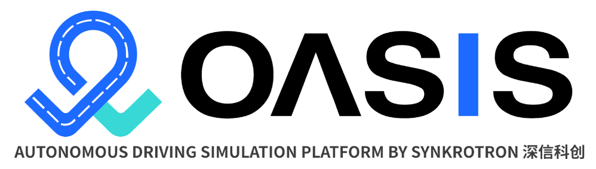

Synkrotron simulation solutions
Synkrotron provides advanced solutions for autonomous driving simulation built on top of CARLA. Synkrotron's product suite OASIS supports a broad range of applications including scenario generation, sensor modelling, traffic simulation and data management. Based on a flexible architecture OASIS can be deployed on the cloud at scale, or in a developer's local environment for prototyping.

OASIS simulation platform
OASIS Sim is a fully-fledged, scalable simulation platform with CARLA at its core. It supports the complete life-cycle of AD simulation:
- scenario import & editing with a graphical user interface
- sensor configuration
- distributed task management
- diagnosis through rich simulation data and logs
Both cloud and local deployment are available through containerized packaging. Comprehensive APIs are exposed for integration with DevOps too. You can request a trial from Synkrotron.
OASIS data platform
OASIS Data is a platform for managing the high volume of data flowing through the autonomous driving R&D pipeline. Data-driven development of AD systems are made possible with OASIS Data via the following functionalities:
- data acquisition and anonymization
- multi-stage filtering based on structured data (CAN bus signals, active-safety triggering, etc.) and unstructured data (sensor readings)
- information mapping and environment reconstruction with LIDAR and/or vision-only strategy
- auto-labeling of data with pre-trained perception models
- scenario tagging and reconstruction with OpenX format output
The processed data from the platform supports downstream applications such as scenario re-simulation with Oasis Sim, retraining of perception models with new labeled data and operational fleet management.
Synkrotron Tools and Services
In addition to the complete solutions introduced above, Synkrotron also offers the following developer tools and services to facilitate AD simulation development.
| Product/service | Description |
|---|---|
| Sensor model: fish-eye camera | Fisheye camera with configurable distortion parameters |
| Sensor model: LIDAR | Advanced lidar model with configurable shutter mode and material reflections |
| SOTIF scenario generation tool | Given the ODD description from user, identify important scenario elements and generate critical scenarios to help uncover unknown unsafe domains of the autonomous driving systems, achieved by using an ontology-based method combined with iterative optimizations against evaluations in Carla |
| Map creation | Given lidar scan data (can also provide road-test data collection equipments & service), create HD maps for the user and output OpenDrive files which can be loaded in Carla for PnC tests or logsim |
| Sensor model: physics models for camera | Supports CMOS simulations and outputs 12bit raw sensor data, for customers who develop ISP algorithms or who has ECUs that need raw data from camera instead of RGBs |
| Static scene creation | Combined HD mapping, 3D asset development and procedural modeling to create 3D static scenes/digital twins for users |
| Dynamic scenario reconstruction | On top of static scenes, also detect and track various traffic participants from user's road-test data; the recovered trajectories/behaviors are turned into OpenScenario 1.0 files and can be re-simulated in CARLA |